Café Ksun ／ 完成版CM シーン一覧
修正のご依頼は、シーン番号（例：S03）を指定してお知らせいただくとスムーズです。
完成動画

画像をクリックするとYouTubeで再生されます。
S03の看板の絵を直してほしいS17のテロップの文言を変えてほしいシーン番号だけでOKです。時間指定は不要です。
シーン一覧（全18シーン）
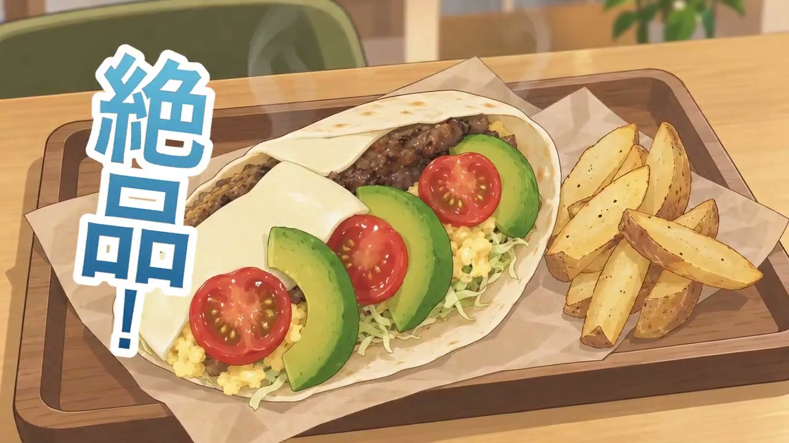
看板メニュー
「絶品！」の見出しから、できたてのブリトーサンドをドンと見せる冒頭カット。
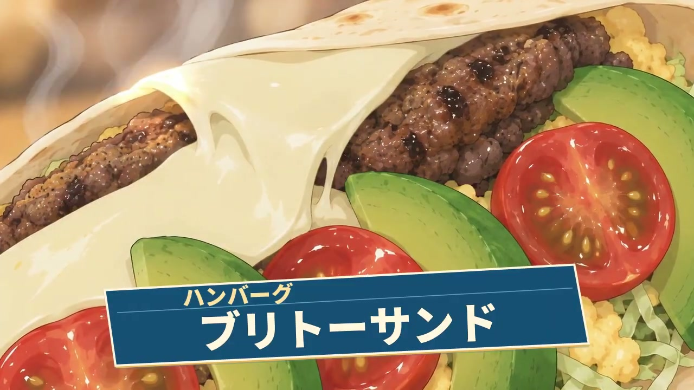
マクロ接写
断面のアップ。チーズのとろけ・湯気・具材のつやを見せるカット。
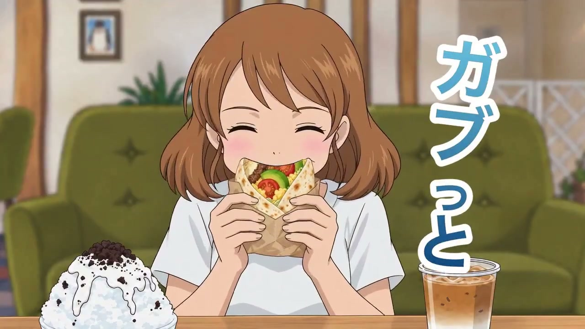
かぶりつき
看板メニューにその場でかぶりつく瞬間。
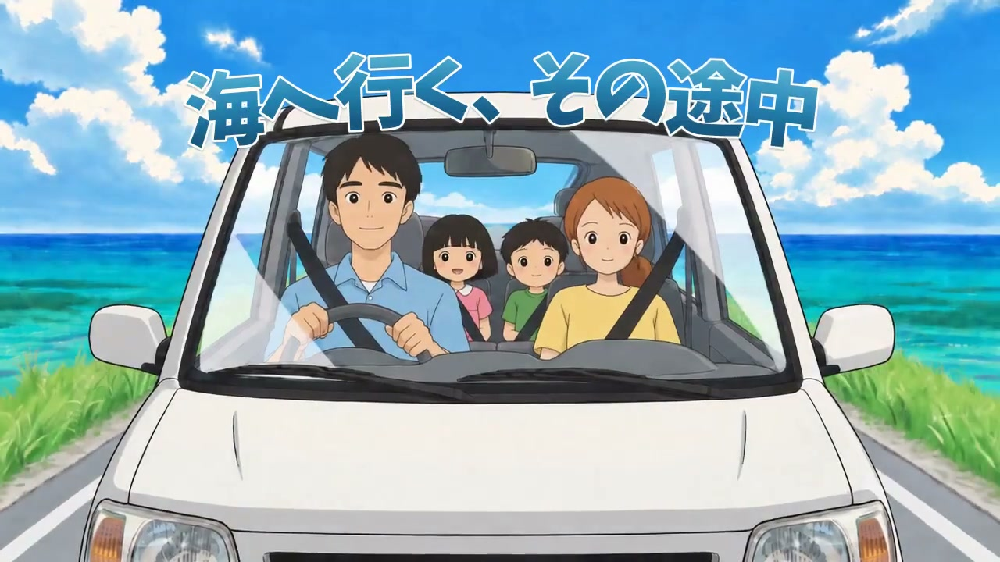
海沿いドライブ
海沿いの道を、ご家族の車がこちらへ走ってくるカット。
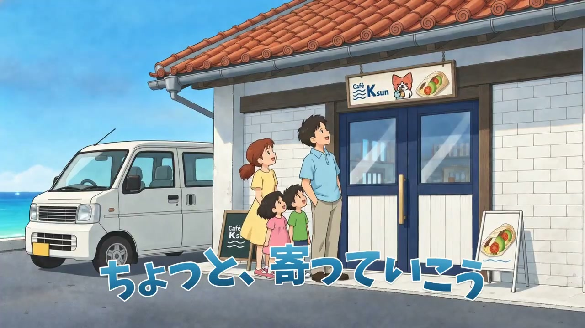
到着・看板を見上げる
車を降り、看板を見上げるご家族。赤瓦の佇まいと海が一緒に見えるカット。
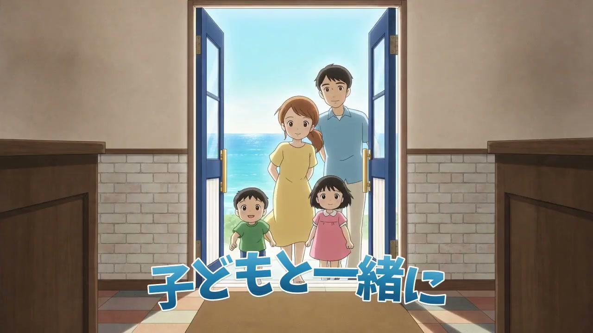
家族が入店
小さなお子さん連れのご家族が、玄関から入っていくカット。
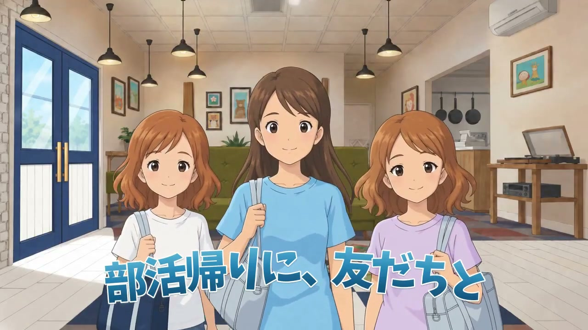
学生3人が入店
部活帰りの学生さん3人が入ってくるカット。
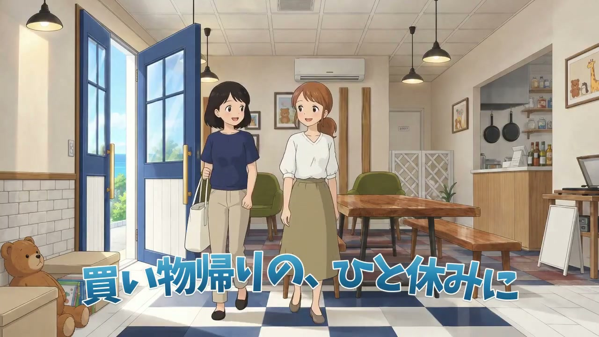
主婦2人が入店
買い物帰りの主婦のお二人が入ってくるカット。
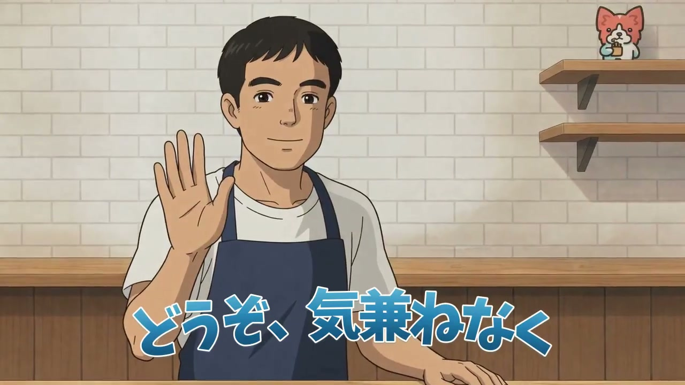
店員の挨拶
店主が軽く手をあげて迎えるカット。
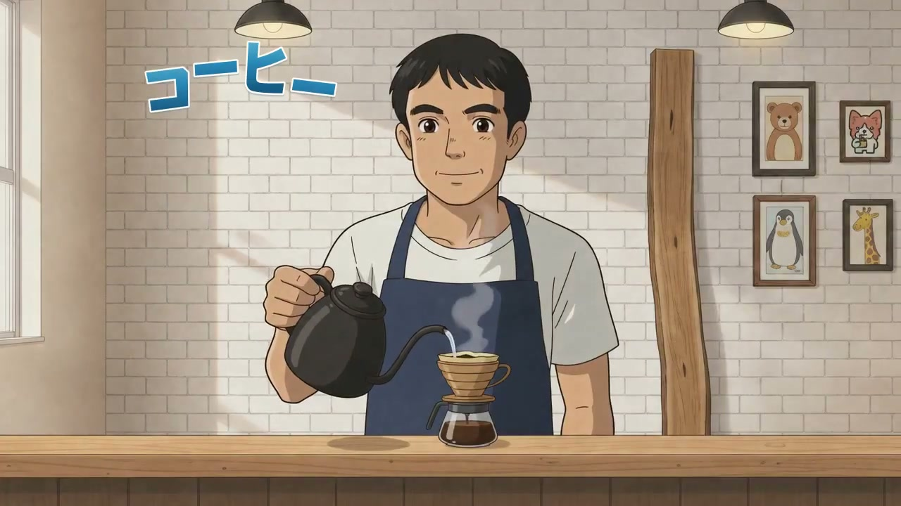
ハンドドリップ
カウンターでコーヒーをドリップする手元のカット。
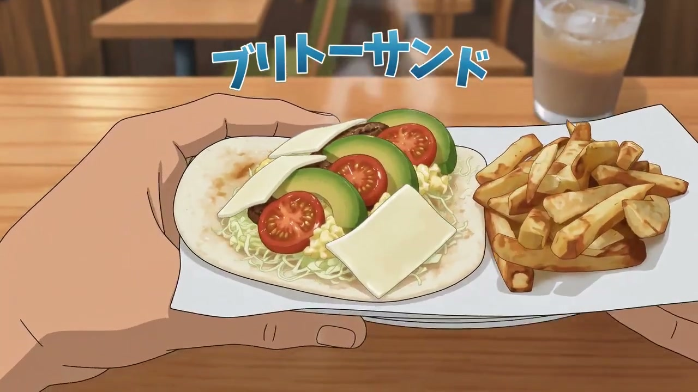
ラップサンドを持ち上げる
焼きたてのブリトーサンドとポテトの皿を持ち上げるカット。
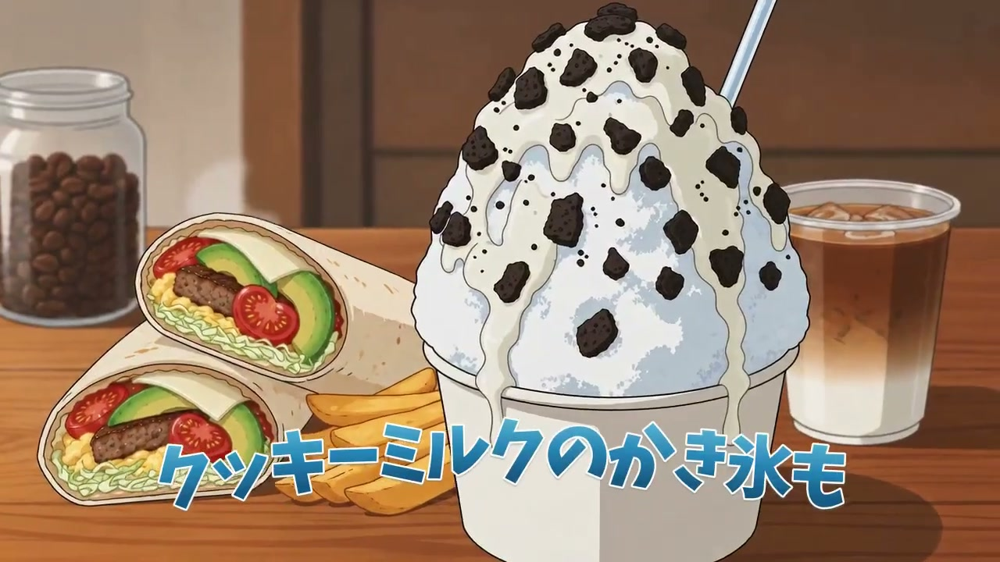
かき氷・アイスコーヒー
クッキーミルクのかき氷とアイスコーヒーのカット。
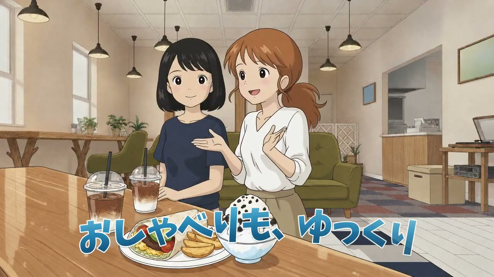
主婦のおしゃべり
主婦のお二人が店内でおしゃべりしているカット。
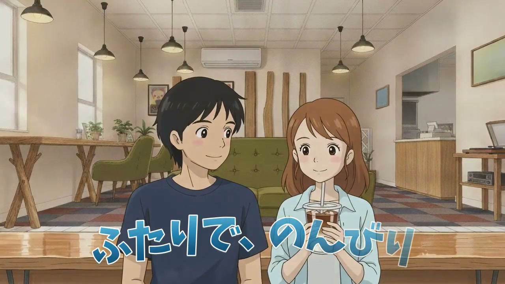
カップル
カップルがアイスカフェオレでひと息つくカット。
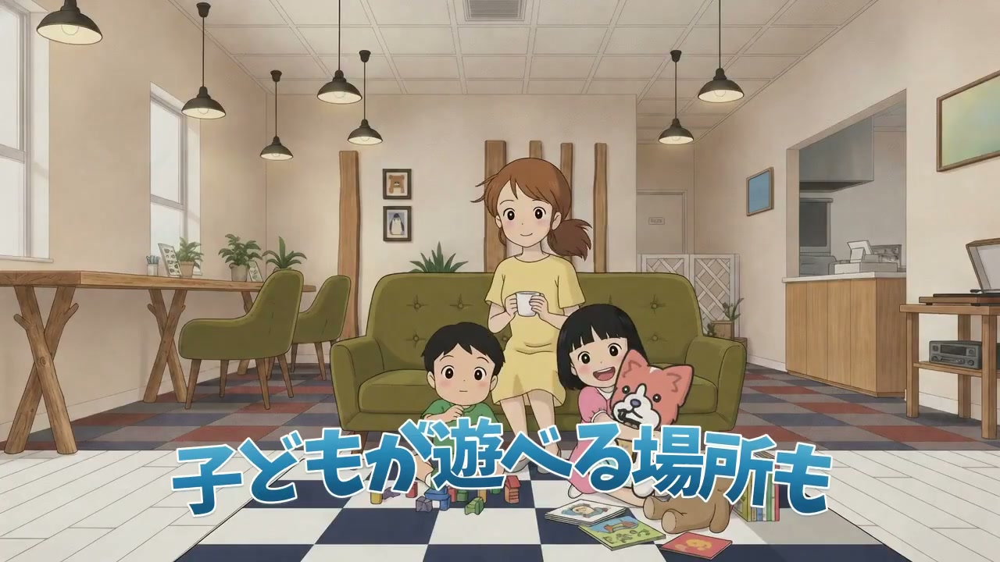
子どもが遊ぶ
キッズスペースで遊ぶお子さんと、くつろぐお母さんのカット。
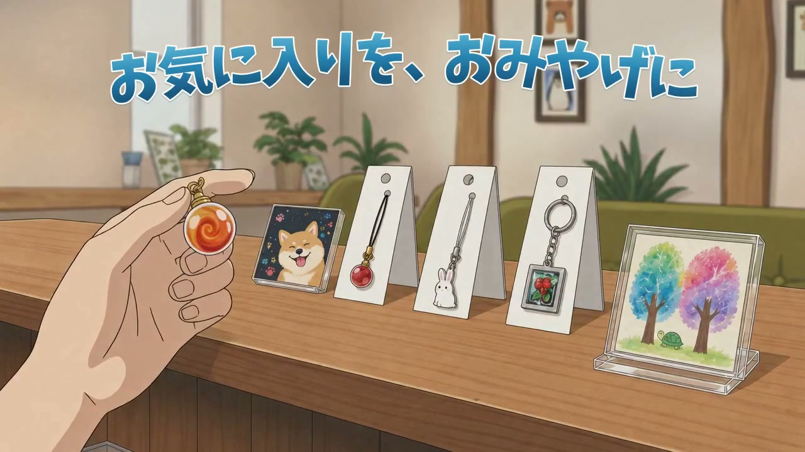
グッズ
店内で販売しているグッズ（アートストラップ等）のカット。
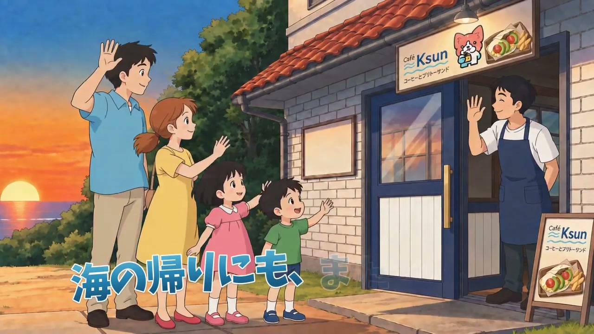
夕暮れの見送り
ご家族と店主が、お互いに手を振り合って見送るカット。
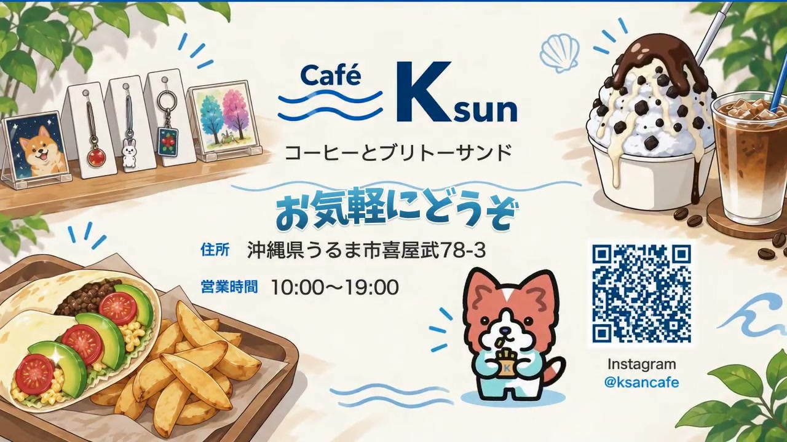
エンドカード
屋号・住所・営業時間・InstagramのQRコードをご案内するカット。